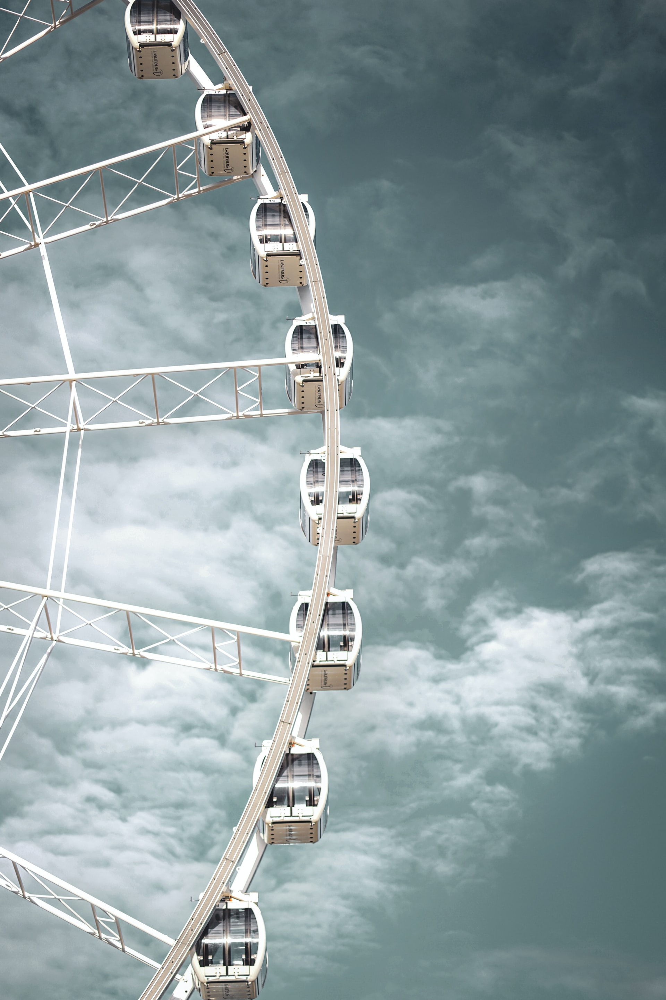

Das Riesenrad
Bekannt als das CalcoWheel, hat das CalcoFest das größte Riesenrad der Welt! Es wurde von Asiop Udefse im Jahr 2002 nur aus Aluminium und Polyurethan hergestellt. Meiner Meinung nach ist dies der beste Teil des Festes.
Der CalcoZirk ist der Zirkus mit die größte Vielfalt von Tieren der Welt. Er hat uber 2.000 verschiedene Tierarten aus der ganzen Welt! Die Akrobaten sind auf die bestest im Polanda! Du kanst hier kommen wenn du mochtest ein bisschen Spaß!
Bei CalcoFest versuchen wir, die besten und gesündesten Speisen und Getränke zu haben. Meiner Meinung nach ist die CalcoPlate das beste Gericht: Es besteht aus: Hanchen , Granatapfel , Gemüsesalat und einen Glass Orangensaft!